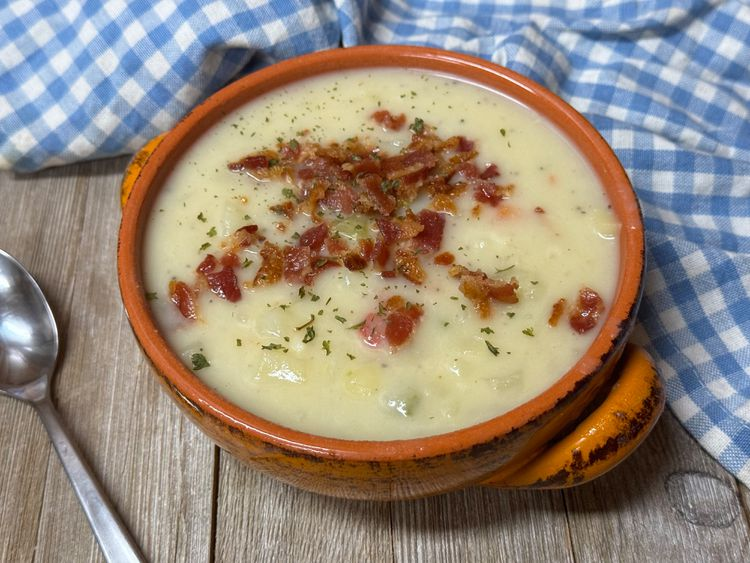

This 3-ingredient potato soup is a shortcut recipe, perfect for Sunday prep for weekday lunches. Using O’Brien potatoes with onion and bell pepper means lots of flavor with no chopping. Top with leftover crumbled bacon, chives, or cheese.
View on allrecipes.com.